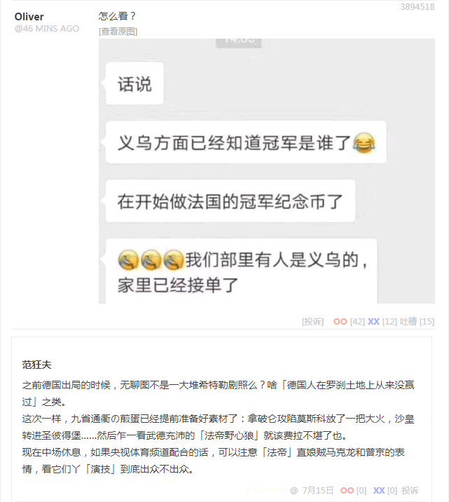
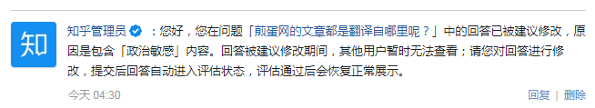

回复
应该是赞助商提供的，至少提前给出了「倾向」再发动员工寻找甚至炮制。所以经常出现文章区、无聊图、段子区互相摑面抽耳光的情况。
就举一个例子，昨天晚上煎蛋上面一批活跃的色目帐号开始哀嚎，似乎因为某些「政治敏感」内容被勒令整改了，到底是站方原因还是用户原因目前还不清楚。
之前说过了，「中央」勒令手机实名制注册的前提下，包括但不限于知乎在内的境内互联网大鳄都在高举紧跟与「中央」保持高度一致，也就煎蛋仍然顶风作案坚决抵制。
相关内容应该「亦当删去」了吧，链接找不到了，只能凭印象复述疑似刺激了「中央」敏感神经的内容。
在文章区有人发刘仲敬的《元史问答》，里面有这样的内容（网上其它地方找到的）：
成吉思汗把草原各部落的习惯法做了一个总结，构成了大扎撒，也就是成吉思汗法典。我们如果再对照一下西方历史，那你就可以把它跟日耳曼习惯法总结的过程相比，加以对照。原来的法律是什么呢？你是谁，就用谁的习惯法。
这一点后来被歪曲成为对汉人的歧视。例如有这样的案例就是说，最典型就是这样的：蒙古人杀了人，付多少多少烧埋银，南人杀了人以后砍头，这是不是歧视你压迫你？
草原的习惯就是这样的，杀了人赔钱；同时，宋朝的成文法是这样的，谁杀了人，官府砍谁的头。
但是蒙古人不是这样的，他们简简单单地把他们统治下的各部族、各种传统都混在一起，我承认你们全都是合法的，各人继续按照各人的方法办事，以最低成本办事。大家不要以为这种办法很野蛮，儒家知识分子认为这是野蛮的，我们不要忘记，大英帝国就是用这种方法来统治的。
但是与此同时，段子区有人转发从其它角度吹捧「大英帝国」的内容，想必也是多年来在网上流传已久已经看腻歪的段子：
印度当年是有活活烧死寡妇陪葬的风俗的，英国人就出手干预了——你们不是说烧寡妇是你们的风俗习惯要我们别干预吗？可以，我们那里也有一个风俗习惯，谁烧寡妇，我们就吊死谁，你不服气，咱们就互相风俗一把。于是成功废除了这项陋习。英国人的治理大致如此，就是把近代西方更先进的文化和管理模式引入殖民地。
这俩煎蛋员工倒是都很卖力吖，对得起工资吖，拼命带节奏吖，也没有阳奉阴违有悖于赞助商指导原则吖……
只不过，大耳贴子互相抽的……将锤镰帮主席台前三排渗透成筛子般「自己开会拿着文件副本，正本跑到白金汉宫去了」的「军情五处」看不下去了，恼羞成怒气急败坏，勒令整改：每年宣传口那么多经费都特么培养了一批「没有自知之明」的只会用大拇指搓手机表演忠君爱国的童年才俊么？
洗完澡了精神多了，补充几句。
所谓「依法治国」，套用到当代法律术语上就是各种商业软件安装前的那个用户必须接受的许可协议当中的措辞，不外乎「于普天之下寻找最严格的法律当中最严格的条款将汝制裁」。
与此同时，我中华兲朝上国自有国情在此，那些活跃色目帐号放风当中的「颇有大英风采」的「蒙古人」若是犯了事，就是「于普天之下寻找最宽松的法律当中最宽松的条款不予追究」。
这就是「两少一宽」之类兲朝特色法律体系出台的法学渊源。
并且，就看放风，「蒙古人」还有平时讲一口流利汉语化作汉人模样混进汉人堆里认不出来就等到关键时刻跳出来把脸一抹显出本相言必称巴尔干卢旺达动辄以天下大乱相威胁的家伙呢。
之前在《范狂夫：第六套人民币何时发行？》当中提到了，在与钦定文豪「争论学术观点」的时候，一批「粉丝」纷纷用「依法治国」口号威胁。
活跃网友说咋地吧，「裁判观众主办方都是我的人，你怎么和我斗」，@马伯庸洗钱怎么了，赃款来自「电信诈骗走私贩毒拐卖人口赌博嫖娼」都没事，你随地吐痰就能枪毙，信不信？
我知道自己是汉族，并且那时候也知道马伯庸是满族，还是于契丹国上京旧址直接注册的，与高考前才归顺「我大清」的野生国师马前卒还不一样。但是这些内容与「颇有大英风采の蒙古人」还联系不起来。
直到前几年，还就是九省通衢的活跃基督徒在龙空爆料，说马伯庸已经获得复旦残联下属滴血认亲实验室颁发的品种鉴定报告了，是「Q1叶尼塞太君」，正是不远万里来到兲朝的「内亚外宾」，据称武德充沛。
于是所有线索都串起来了。这盛世，如各位所愿。
补充：

世界级假球
怎么看？
话说
义乌方面已经知道冠军是谁了
在开始做法国的冠军纪念币了
我们部里有人是义乌的，家里已经接单了
之前德国出局的时候，无聊图不是一大堆希特勒剧照么？啥「德国人在罗刹土地上从来没赢过」之类。
这次一样，九省通衢の煎蛋已经提前准备好素材了：拿破仑攻陷莫斯科放了一把大火，沙皇转进圣彼得堡……然后乍一看武德充沛的「法帝野心狼」就该费拉不堪了也。
现在中场休息，如果央视体育频道配合的话，可以注意「法帝」直娘贼马克龙和「沙皇」普京的表情，看它们丫「演技」到底出众不出众。

可见又破坏「钦定大目标」了也
补充后续：
 赞助商急了
赞助商急了
FLG网站，海外中文网站都开始报导煎蛋要被关了，此小破网站社会联系还蛮广泛的，是有舆论能力的么
因为「赞助商」急了吖。按照「九头鸟」传统，这比「三姓家奴」或「三家性奴」还要过分的「九省通衢」能团结起来就怪了。一票灌水机就知道哗哗发段子刷业绩，内容自抽耳光，怪谁？
如果这批逗哔能分工合作，通过关系户搜集的用户隐私，对「大数据」进行「捅妓」，对不同群体推送不同类型的针对性宣传，破坏力要比现在严重得多。
详见：《范狂夫：煎蛋网的文章都是翻译自哪里呢？》